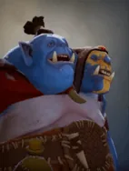
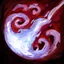

Multicast Aura
Aura
Grants all allies around: Have a chance to recast its ability and gain a bloodlust effect with bonus attack speed.
| ★ | ★★ | ★★★ | |
|---|---|---|---|
| Radius | 350 | 450 | 550 |
| Multicast Chance% | 30 | 35 | 40 |
| Bonus Attack Speed% | 20 | 30 | 40 |
| Bloodlust Duration | 10 | ||
Despite being largely incapacitated by his IQ, the Ogre Magis success in battle is attributed to pure skill.
Stats
| ★ | ★★ | ★★★ | |
|---|---|---|---|
| Health | 950 | 1900 | 3800 |
| Mana | 0 | 0 | 0 |
| Armor | 3 | 3 | 3 |
| Magic resistance | 20% | 20% | 20% |
| Attack damage | 55–75 | 110–150 | 220–300 |
| Attack interval (s) | 1.5 | 1.5 | 1.5 |
| Attack range | 205 | 205 | 205 |
| Move speed | 500 | 500 | 500 |
 Ogre · Iron Fist
Ogre · Iron Fist
- (2) At battle start, each Ogre eats every adjacent non-Ogre ally (up, down, left, right) of equal or lower level. It gains 60% of their current HP as max HP and 60% of their attack damage. If it survives a won battle, the eaten pieces' levels are added to its own when working out damage to the losing player.
 Mage · Magical Vulnerability
Mage · Magical Vulnerability
Each friendly Mage on the board (including itself) gives Mages +10% mana gain, up to +60%.
- (3) All enemies get -30% magic resistance.
- (6) All enemies get another -35% magic resistance (-65% in total).
- (9) Enemies freeze (stunned) whenever they take magic damage, for magic damage ÷ 400 seconds (at least 0.2s).